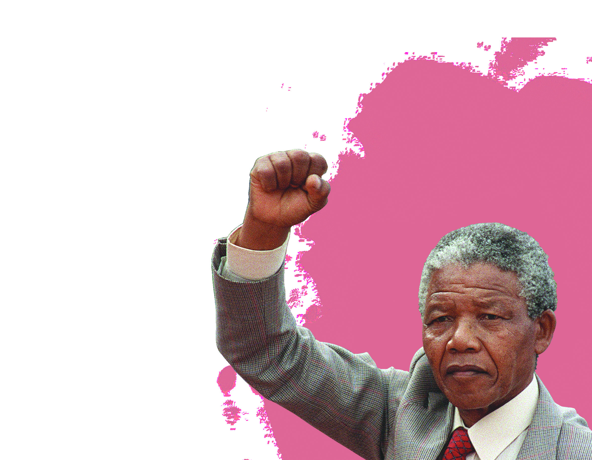
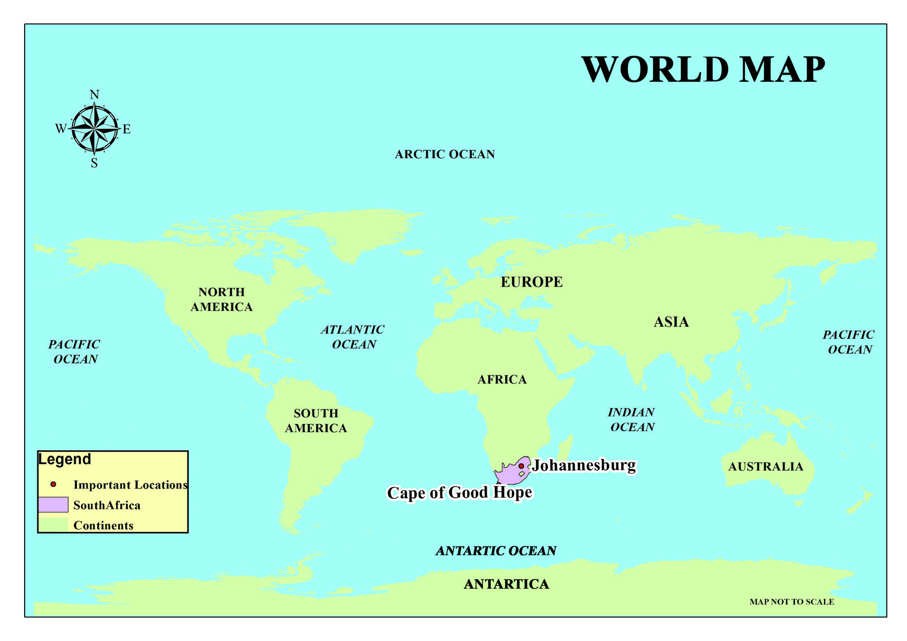
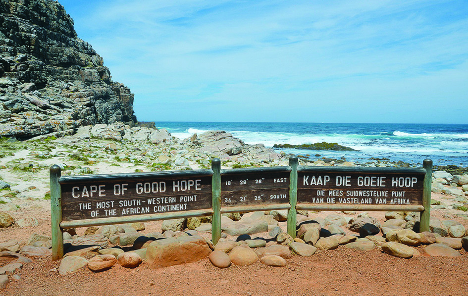
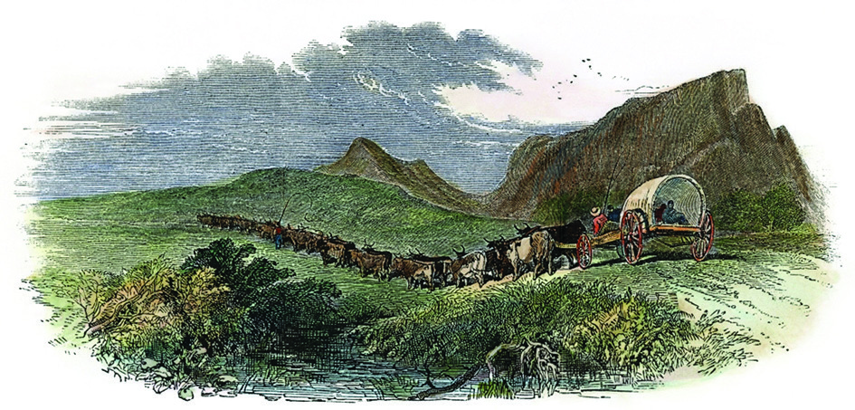
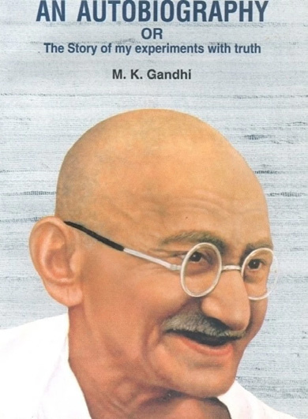
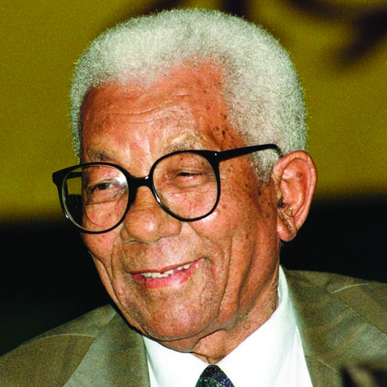
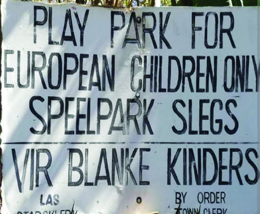
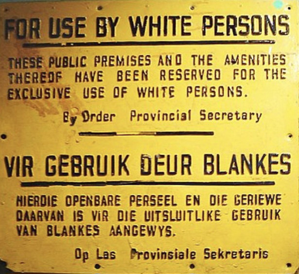

11
I feel oppressed by the atmosphere of white domination that lurks all around in this
court room. It calls to mind the inhuman injustices caused to my people by this same
white domination. It reminds me that I am voteless because of this parliament. We are
without land, and forced to occupy
poverty-stricken
Reserves
overpopulated
and
over
stocked. I raise the question
how can I be expected to
believe that this same racial
discrimination
which
has been the cause of
so much injustice and
suffering right through
the years should now
operate here to give me
a fair and open trial?
The Pretoria Trial of Nelson Mandela
(1962)
Fig. 11.1
Against Discrimination
Page 54


Page 55

167
Against Discrimination
Given above are the words of Nelson Mandela, the freedom fighter of South Africa.
Who practised racial discrimination in South Africa?
In which situation would Nelson Mandela have to undergo such a trial?
Nelson Mandela was the person who fought for the emancipation of the South
Africans who were oppressed because of their race for centuries. He had to suffer
imprisonment for three decades, for fighting for the freedom of his country and
its people. We need to know the features of this country to know more about the
discrimination and oppression that its people had to undergo.
Examine the World Map and find out the continent in which South Africa is situated.
Fig. 11.2
World Map
South Africa: Location, Geographical Features
South Africa is a country that is located at the southernmost tip of the African
continent sharing its borders with the Indian Ocean and the Atlantic Ocean. South
Africa has its own diverse geographical features. Broad coastal lands, vast plains
Page 56



168
- Part 2
VII
Social Science
and plateaus, lofty mountain ranges, great rivers, waterfalls and dry deserts make
this country unique. The wealth from inland agrarian lands and mines, weather and
human resources attracted the Europeans to South Africa.
Examine the globe and atlas and find out the following details.
Between which latitude and longitude is South Africa situated?
Which countries share border with South Africa?
The Cape of
Good Hope
The Cape of Good Hope is
situated at the southernmost
tip of the African continent, on the
shores of the Atlantic. To reach the
countries in the Asian continent
like India, the Europeans had to sail
through the Atlantic Ocean, encircling
the African Continent. As this cape gave the navigators the hope to reach Asia,
it was named Cape of Good Hope.
Fig. 11.3
Identify the location, capital, major cities and historically important
sites of South Africa using digital map.
Colonisation of South Africa
The first inhabitants of South Africa were
tribal people who belonged to the groups
San and Xhosa. It was the tribal groups
from the other parts of Africa who migrated
to this place for the first time. Towards the
end of the 15th century, the Europeans
started their expeditions to South Africa.
By the 17th century, the Dutch became
influential in South Africa and Cape Town
became their major colony.
By the 18th century, the British reached
South Africa. They decided to make South
Colonisation
Colonisation is the political,
social, economic and cultural
domination and control of one
country over another region
and its people.
Page 57


169
Against Discrimination
Africa their colony with the aim to acquire more land areas in different parts of the
world, to capture the immense wealth of Africa, to establish supremacy over other
European countries and to make it a temporary point of halt on their journey to the
Asian continent.
The Great Trek
Boers
Boers are the descendants of the Dutch (Netherlands), French and
the Germans who came to South Africa from Europe. ‘Boer’ is the
Dutch word for ‘farmer.’ Later, they came to be known as Afrikaner
and their language and culture as Afrikaans.
Let’s examine how the colonisation projects of the British affected the Boers.
The British captured the Cape Colony from the Dutch and implemented certain
policies there.
Restrictions were imposed on Dutch language. English was made the sole language
of Cape Colony.
By the mid 19th century, British abolished slavery in their colonies. This adversely
affected the Boers who used slaves to cultivate their lands.
The Great Trek is the exodus of the Boers to the interior areas of South Africa to
escape from such policies introduced by the British.
Following the Great Trek, the Boers established Republics in Transvaal, Orange
Free State and Natal.
Fig. 11.4
Great Trek
Page 58
170
- Part 2
VII
Social Science
Boer Wars
Let’s examine the circumstances which became the causes of the Boer Wars that
changed the history of South Africa.
Towards the end of the 19th century, mines of gold and diamond were discovered
in the regions under the Boer Republics. Thus, South Africa became the largest
producers of gold and diamond. The Boer wars started when Britain attempted to
merge the Boer Republic with the British colonies.
The First Boer War
Britain captured Transvaal to extend their reign to more regions. Following this,
the First Boer war started (1880-81). The Boers won the battle and formed the
Republic of South Africa, merging Transvaal and the nearby regions.
The Second Boer War
Disputes over the asset from the gold mines and the control over them led to the
Second Boer War. The Boer administrators instituted tax on the gold mines. The
British demanded the right to vote for their labourers in the mines. When this
demand was denied by the Republican administrators, the armed struggle – the
most destructive war in the history of South Africa, started.
The British army defeated the Boer republics in this battle.
As per the Treaty of Vereeniging,
the Boers approved the sovereign of
Britain. The union of South Africa
was formed as an autonomous
territory under the control of the
British. Based on the new constitution
implemented by the Union of South
Africa, the British and Afrikaners
got a high consideration. However,
the fundamental rights of the black
people were denied.
Fig. 11.5
Second Boer War
Page 59



171
Against Discrimination
Prepare a concept map on the importance of Boer wars in the history
of South Africa.
Mahatma Gandhi in South Africa
...another official came to me and said, ‘Come along, you must
go to the van compartment.’
‘But I have a first class ticket,’ said I.
‘That doesn’t matter,’ rejoined the other. ‘I tell you, you must
go to the van compartment.’
‘I tell you, I was permitted to travel in this compartment at
Durban, and I insist on going on in it.’
‘No, you won’t’, said the official. ‘You must leave this
compartment, or else I shall have to call a police constable to
push you out.’
...The constable came. He took me by the hand and pushed me
out. My luggage was also taken out.
...The evening train arrived. There was a reserved berth for me. I now purchased at
Maritzburg the bedding ticket I had refused to book at Durban.
M.K. Gandhi - ‘AN AUTOBIOGRAPHY OR The Story of My Experiments with Truth’
Gandhiji describes in his autobiography the then social condition that existed in
South Africa.
Mahatma Gandhi reached South Africa in 1893. It was a period of undeclared racial
discrimination. In the ‘Indian Opinion,’ a daily started by Gandhiji, in Africa, he
wrote about the discrimination of the colonial administration towards the Africans,
thus: “Africans alone are the original inhabitants of this land. The whites have
occupied the country forcibly and appropriated it to themselves.”
Gandhiji participated in the voluntary activities to extend help to the ones who
underwent sufferings in the Second Boer war. It was here that Gandhiji experimented
the weapons of satyagraha, non-cooperation and civil disobedience. Hence, South
Africa is known as ‘Gandhiji’s Political Laboratory.’
Prepare an analytical note about Gandhiji’s opinion on the racial
discrimination prevailed in South Africa including the methods of
strike adopted by him.
Page 60
172
- Part 2
VII
Social Science
The Formation of African National Congress
The South African Party led by the Whites came to power in the first election
after South Africa became an autonomous territory under the control of Britain.
They brought in laws in the housing, administration and industrial sectors which
would affect the people. The racial differentiation between the blacks and the
whites got intensified. People were denied the freedom of movement and the right
to education. The organisation, the African Native National Congress formed to
protect the rights of the people of Africa was later came to be known as the African
National Congress. The leaders of the African National Congress devised several
means of struggles to build a discrimination-free South Africa.
Let’s examine the oppressive laws and their consequences in South Africa during
the tenure of different governments.
Laws
Consequences
The Mines and Works
Regulations Act
Skilled works were reserved only for the
whites.
Natives Land Act
The blacks were allocated special areas
called ‘reserves’ and were not allowed to
purchase land in other areas.
The Natives [Urban Areas] Act
Blacks were restricted from entering cities.
Separate Representation
of Voters Act
Blacks were removed from the general
voters’ list.
Nelson Mandela
Nelson Mandela was born on 18th July 1918 in the Thempu royal family in Transky
province of South Africa. His name was Rolihlahla. His father was Gadla Henry
Mandela, the head of Madiba clan and mother Noskenny Fanny. After primary
education, he got educated in South African Tribal Heritage and Culture, and later
passed the degree in Law.
Page 61

173
Against Discrimination
Fig. 11.7
“No one in my family has gone to
school. On the first day at school my
teacher, Miss Mdingane, gave each
of us an English name and said that
thenceforth that was the name we would
answer to in school. This was the custom
among Africans in those days and was
undoubtedly due to the British bias of our
education... That day, Miss Mdingane told
me that my new name was Nelson. Why
she bestowed this particular name upon
me I have no idea.”
Nelson Mandela, Long Walk to Freedom, 1994
An African child is born in an
Africans Only hospital... When he
grows up, he can hold Africans
Only jobs, rent a house in Africans
Only townships, ride Africans
Only trains, and be stopped at any
of the day or night and be ordered
to produce a pass, without which
he can be arrested and thrown
in jail. His life is circumscribed
by racist laws and regulations
that cripple his growth, dim his
potential and stunt his life.
Nelson Mandela
Long Walk to Freedom, 1994
Have you read the references made by Nelson Mandela on the life of the people of
South Africa?
What could be the reason the teacher gave Nelson Mandela for the new name
instead of the name given by his parents?
Page 62




174
- Part 2
VII
Social Science
What are the oppressions the South African people had to face?
Nelson Mandela, who was well aware of the need to free his people from the
clutches of colonisation and racial discrimination, endeavoured tirelessly for the
freedom of his people and nation.
Based on the oppressive laws existed in South Africa and the
references made by Nelson Mandela on them, conduct a discussion
on the realities that the blacks had to face.
Nelson Mandela founded the African National Congress Youth League by leading
the youth. Later he took membership in African National Congress.
The major leaders who worked along with Mandela were Walter Sisulu, Oliver
Tambo and Desmond Tutu.
Fig. 11.8
Walter Sisulu
Fig. 11.9
Oliver Tambo
Fig. 11.10
Desmond Tutu
Apartheid
The social order that discriminated the blacks racially and economically is known
as apartheid due to which the whites in South Africa got high consideration.
The National Party that came to power in 1948 legally enforced racial separation
and discrimination and legalised the apartheid. The following are the laws that
were introduced for executing the apartheid.
Page 63


175
Against Discrimination
Native Pass Law Act
The blacks needed special passes for moving
from one place to another.
Group Areas and
Segregation Act
People were transported to different
locations based on race. This was known as
the Great Apartheid.
Population
Registration Act
Identity card was made compulsory for all
who completed 18 years of age.
Home Land System
Bantu Authorities Act
The blacks became citizens of special local
self-government bodies and hence lost their
South African citizenship.
Reservation of Separate
Amenities Act
Signboards were installed in public places
such as grounds, beaches, buses, hospitals,
schools, parks, etc.
The Bantu Education Act
The blacks were restricted to undergo
traditional education only.
Observe the pictures of some signboards related to Separate Amenities Act in
South Africa.
Entry only for Non White Males
Play park for European children only
Page 64



176
- Part 2
VII
Social Science
Fig. 11.11
Warning signs during apartheid
Under section 37 of the Durban Beach laws,
Durban beach is reserved for the sole use of
the whites
These Public Places and the amenities thereof
have been reserved for the exclusive use of
the whites
Beware of Natives
Entry Only for the Whites
The intensity of violation of human rights that the blacks had to face in their own
land is indicated in these signboards.
With the implementation of such inhuman laws, the people of South Africa were
denied the right to vote, governance and education.
Roleplay the issues faced by the people due to the apartheid laws.
The South African Freedom Movement
Colonisation and apartheid adversely affected the life of the people of South Africa.
The blacks of South Africa faced political, economic and cultural downfall.
Page 65
177
Against Discrimination
Though the national economy grew rapidly, the native population struggled to
meet even their basic needs.
Let’s examine a few major struggles undertaken by the South African people
against such discrimination and oppression.
The African National Congress under the leadership of Nelson Mandela started
agitations across the country for the emancipation of the blacks. In the early stage,
the protests were peaceful civil disobedience movements.
Fig. 11.12
A protest by the people of South Africa against oppression
Following the exhortation of the South African Indian Congress and African
National Congress, people from different walks of life such as factory workers,
office workers, teachers and students joined the struggle. The protesters who
questioned the ‘Pass Laws,’ curfew, and the like were arrested and imprisoned.
Nelson Mandela was again arrested and imprisoned under the charge of treason in
1956. After a long period of trial, he was acquitted.
African Year
The year 1960 deserves special
importance in the history of the
freedom struggle of the African countries. This
year in which seventeen African countries got
freedom, has great relevance in the history of
South Africa as well. The people who fought
against ‘Pass Laws’ were massacred at Sharp Velle and the armed rebellion
against the South African government started during the same year in 1960.
Fig. 11.3
Page 66


178
- Part 2
VII
Social Science
Robben Island
Robben Island has as much importance
in the history of South Africa as
that of the cellular jails (Kalapani)
in the Andaman Nicobar Islands in
the Indian freedom struggle. This is the island
to which the arrested African leaders of the
freedom struggles were exiled. Nelson Mandela
remained imprisoned for eighteen years here.
Fig. 11.14
A new mode of struggle named ‘Stay-at-home’ was organised demanding the
right to vote, a constitution without apartheid and the retrieval of ‘Pass Laws.’
The African National Congress and the South African Indian Congress led the
struggles. Native and Indian workers took part in the struggle. The factories, textile
mills and schools across the country remained shut. This strike revealed the unity
and strength of the anti-apartheid movement. The ‘Stay-at-home’ was a major
struggle in the history of the freedom struggle of South Africa.
As peaceful protests did not yield any results, Nelson Mandela called for armed
rebellion.
Nelson Mandela was sentenced to life imprisonment for sabotage, treason and
conspiracy in 1964. He had to suffer rigorous imprisonment in the Robben Island
and Paulsmoor Jail for a continuous 26 years. Countries around the world resorted
to siege on South Africa. The United Nations passed a resolution stating that
‘apartheid is an offence against humanity.’ This led to the spread of riots across the
country. The government declared Emergency to oppress the people’s protests in
1984. Several blacks were killed in the conflicts that followed.
When the protests were beyond control, measures to end the apartheid were started.
Political prisoners were released and the restrictions imposed on political parties
were lifted. Nelson Mandela was released on 11th February, 1990.
The Apartheid Policy was abolished in 1991. In the first general election conducted
in 1994, the African National Congress gained majority. Nelson Mandela was
elected the first black President of the free, democratic South African Republic.
Page 67

179
Against Discrimination
Conduct a quiz competition (Chodhyotharapayattu) preparing
questions related to the freedom struggle of South Africa.
Speech by Nelson Mandela
after sworn in as President
We, the people of South Africa, declare to our country
and to the world: South Africa belongs to all, black and
white, who inhabit this country. Here, no government
can legitimately claim power unless it is based on the
will of the people.
-Introductory words of the Freedom Charter, 1994
Through this speech, Mandela reminded the Africans of the need to stay united.
Nelson Mandela’s view of co-existence, now, is a model for all nations of the
world where different races harmoniously live together.
Extended Activities
l You have seen the extent to which colonisation and apartheid imposed by the
whites made the lives of the blacks troublesome. Stage a play based on the
struggles underwent by the blacks against discrimination.
l Prepare a timeline on the struggles against the apartheid in South Africa.